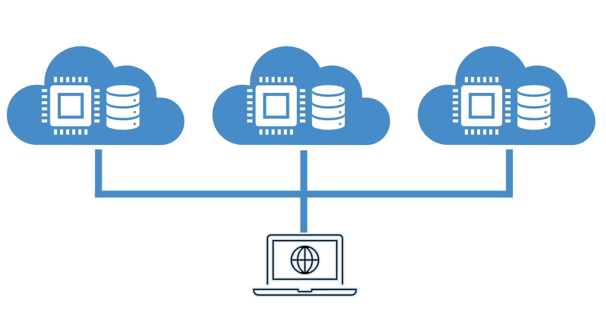
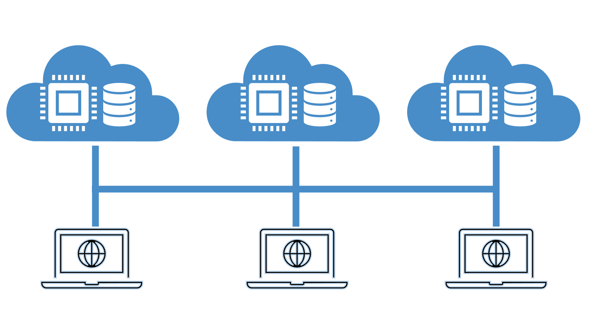
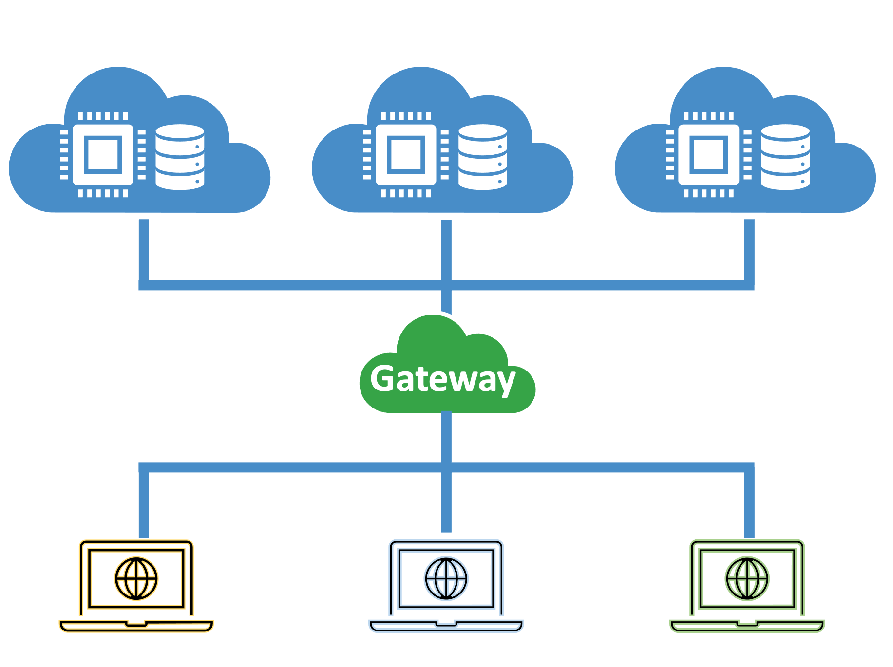
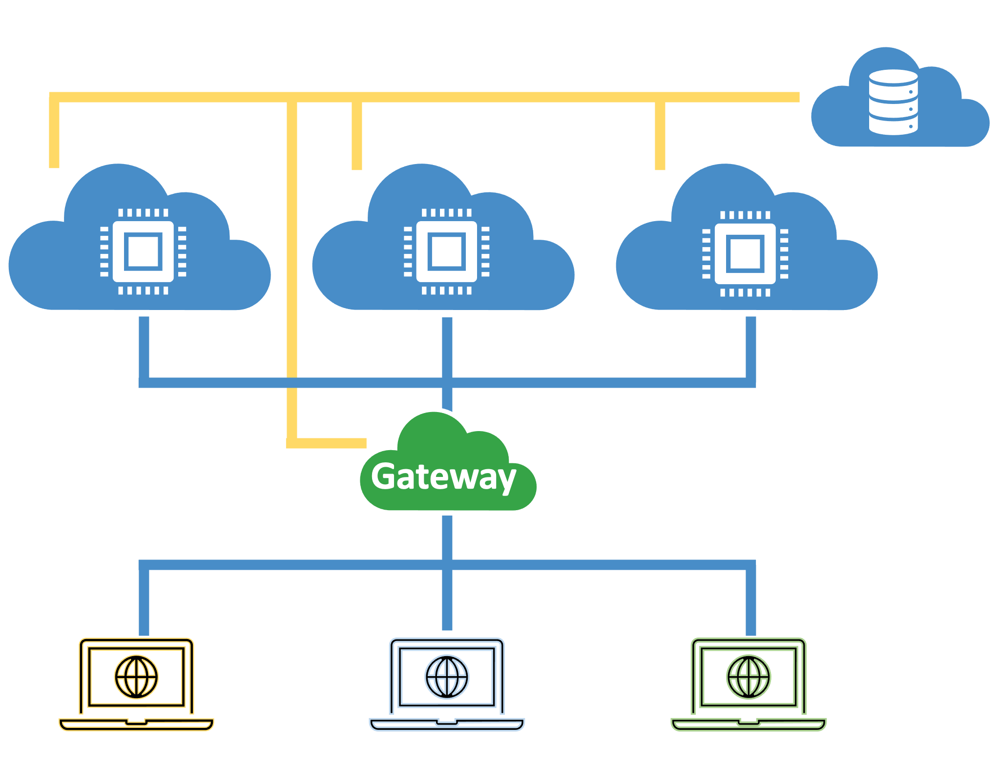

HPC in the Cloud
The Background
The differences are almost diminished between a state-of-the-art computing unit in a HPC facility and a top-end computer hosted in a cloud computing platform. In the past, HPC facilities in research institutes have almost the absolute supermacy for high performance computing (HPC) tasks. Now, however, as increasing numbers of web-based services now adopt artificiail intelligence (AI) algorithms, cloud computing companies are also providing HPC services. The functionalities of the web-based services, as well as users’ expectations for fast responses, are craving for more and more powerful computers in the cloud’s backend. (Two examples are the large-language models (LLM) and AI art generators.) Moreover, ever since graphic processor units (GPU) become a powerful accelerator for HPC tasks, both HPC facilities and cloud computing companies armed their computer clusters with similar GPU cards.
“Wait, what is cloud computing?”
An over-easy definition of “cloud computing” from the user perspective of view is that: “I don’t know where my computer is, but I can log in there and finish my job in that computer”. And an over-simplyfied definition from the vendor perspective of view is: “instead of buying an expensive computer, you can check out virtual computers from us; if you need to keep something (small) running for a long period of time, you can check out our mini-computer, too.”
In the 2000s, when the Amazon Web Service (AWS) lift from the ground, cloud computing was meant to minimize the cost of hosting web-based services from maintening private web servers. The computational needs for these web-based services often spikes upon large-volume user activities, but the computational cost of a single run is not much.
The Concept “HPC in the Cloud”
The concept “HPC in the Cloud” is not new. In fact, cloud computing has been a versatile solution to high performance computing tasks for reserchers with different needs.
The central idea of “HPC in the Cloud” is to
utilize computational resources in a public/private cloud
avoid cost on hardware maintenance
allocate a dedicated and perpetual computational partition
easily expand/reduce add-on computational partitions whenever needed
adjust the software environments for a specific community of users
standardize and archive any work flow.
In brief, this idea aims to build a HPC software environment and a HPC work flow without building a HPC facility.
Two unique features also make this architecture stand out from the traditional HPC environment are:
flexible scale of HPC resource allocation
personalized/customized HPC environment for specific user(s)
Why do we need Cloud Computing for HPC?
1. An axillary resource to the traditional HPC resources
The “HPC in the Cloud” concept and implementation are not revolution ideas against the traditional HPC resources. Instead, HPC facilities are still the most rubust option that provides stable and reliable computational resources.
2. A ready-to-use HPC resource
HPC facilities often aims to maximize the loading at all time, therefore, there is always a waiting time before users can actually utilize the HPC resources. An HPC user can be very frustrated if:
the HPC facility is under unusual high-volume usage. For example, extremely long waiting time in the queue
the HPC jobs are unable to reconcile with the HPC policy. For example, HPC jobs that has unexpected long computation * cycles which exceeds the maximum computation time allowance per job.
the HPC software needs to be tested in various architecures and scales. For example, compatability issues in the acceleration cards.
3. Intereactive HPC!
An increasing number of services now require HPC workload for human-accepatable responses. Two well-known examples are 1) the LLM-based chatbots, such as ChatGPT by OpenAI and Llama 2 by Meta, and 2) AI text-to-image generators such as Midjourney and DALL-E 2. Without HPC resources, the workflow can be in a very slow process that eventually fails users’ expectations. Therefore, it is very crucial to deploy the real-time demonstrative workflow to HPC resources with interactive functionalities.
Another scitific need for intereactive HPC is on-the-fly rendering of the simulation data to provide images/videos which are updated in real time. This often requires a powerful data processing unit (DPU) and graphic processing unit (GPU).
Implementations
There can be 3 Level steps to implement an “HPC in the Cloud” architecture:
Running HPC programs on cloud computing resources
Support multi-user and multiple HPC jobs
Cloud computing environment
Step 1. One-user scheme
The simplest and most straightforward implementation of this idea is to use the cloud computers as individual remote computers. In this scenario, there is only one user, who is also the administrator or the super-user in the project. The computational jobs will be assigned to different virtual nodes depending on the user’s schedule.
Pro:
easy to get started and easy to run
the user has the full freedom to choose the computational resource
no need to worry about data storage and communication between nodes
Con:
the user needs to manually track the job status
jobs are limited to one job per node.

Step 2. Multiple users
The next step is to expand the service to allow additional users to join the project. This can create a number of issues. First, if all users would access to the computer nodes using the same identity, i.e., the super-user, the system can have higher security risks. Second, it is very easy to lose track of users’ activities. Third, the users must verbally create a series of protocol for data storage and CPU time priorities. Thus, the ‘one-user’ scheme will not work well in this scenario.

An easy solution is to 1) create individual profiles and file spaces for each user, and 2) by adding a virtual node as a “gateway” or a “login node”, forbid user’s direct access to the “compute” nodes. Therefore, the users need to firstly log in to the gateway node with their own identity, then proceed to the compute node.

Pro:
this provides a temporary solution to the “multi-user multi-node” scenario
Con:
the users need to manually track the job status
unless carefully managed, the software and hpc environments can be easily asynchronized
the softwares need to be repeatedly installed on each single node
Step 3. Parallel File System
Using a unified file system for data storage across the gateway and compute nodes, rather than using separated file systems, simplifies the data management and data transfer within the system. In cloud computing, the super user can subscribe a storage space (for example an NFS space), and mount this file system to each node. In this way, users can minimize the inter-node data transfer when working across multiple nodes.
Another advantage of using a parallel file system, compared to seprated file systems, is efficient software management. With the parallel file system scheme, users can use the same version of software, which can achieve an HPC-style of software management.

Step 4. Job Scheduler
To maximize the compute nodes utilizations witout protocols, a HPC job scheduler, such as PBS and SLURM, must be implemented. Using the previous “gateway” architecture, the job scheduler architecture would stop the users’ direct access to the compute nodes, and replace it with a limited-time access with job reservations.
In this scheme, a queueing system will be implemented to block users’ job from rushing to all computers, instead, prioritized jobs will be executed before regular jobs.